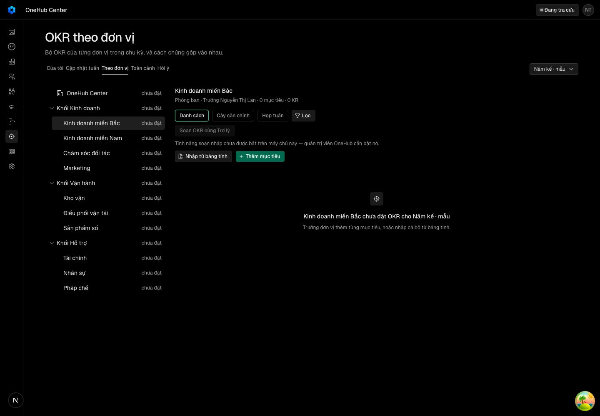
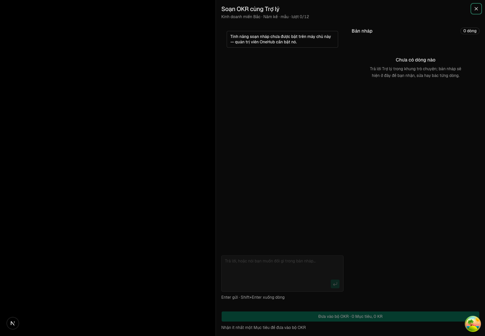
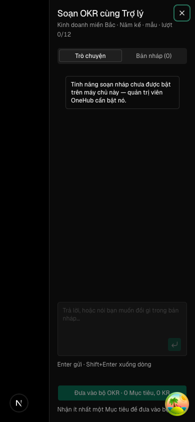
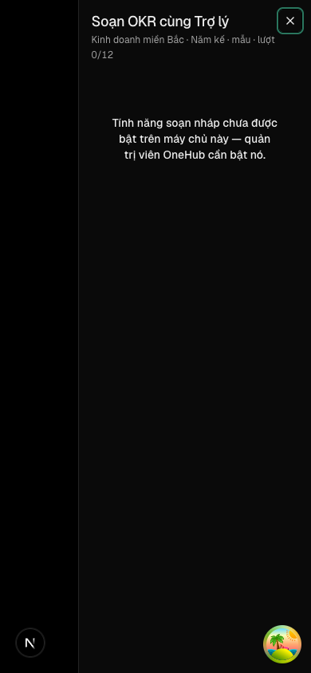
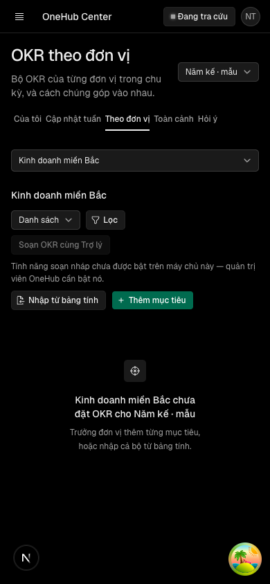

Soạn OKR khi chưa cấu hình cầu nối — nút không mời mở cuộc, màn nói thẳng chưa bật, cuộc chưa có lượt không bị tính vào trần, có hướng dẫn dựng apps/agent-okr trên Vercel
Các eval
| Eval | Tiêu chí | Loại | Verdict | run_id | verified_at |
|---|---|---|---|---|---|
| E1 | AC-1 | test | PASS | minted-soan-okr-song-lai-E1-r1 | 2026-10-04T01:21:07Z |
| E2 | AC-1 | test | PASS | minted-soan-okr-song-lai-E2-r1 | 2026-10-04T01:21:07Z |
| E3 | AC-2 | test | PASS | minted-soan-okr-song-lai-E3-r1 | 2026-10-04T01:21:07Z |
| E4 | AC-3 | test | PASS | minted-soan-okr-song-lai-E4-r1 | 2026-10-04T01:21:07Z |
| E5 | AC-4 | test | PASS | minted-soan-okr-song-lai-E5-r1 | 2026-10-04T01:21:07Z |
| E6 | AC-4 | test | PASS | minted-soan-okr-song-lai-E6-r1 | 2026-10-04T01:21:07Z |
| E7 | AC-4 | test | PASS | minted-soan-okr-song-lai-E7-r1 | 2026-10-04T01:21:07Z |
| E8 | AC-5 | test | PASS | minted-soan-okr-song-lai-E8-r1 | 2026-10-04T01:21:07Z |
| E9 | AC-5 | test | PASS | minted-soan-okr-song-lai-E9-r1 | 2026-10-04T01:21:07Z |
| E10 | AC-6 | script | PASS | minted-soan-okr-song-lai-E10-r1 | 2026-10-04T01:21:07Z |
| E11 | AC-7 | ui-check | PASS | minted-soan-okr-song-lai-E11-r1 | 2026-10-04T01:21:07Z |
| E12 | AC-7 | script | PASS | minted-soan-okr-song-lai-E12-r1 | 2026-10-04T01:21:07Z |
| E13 | AC-2 | ui-check | PASS | minted-soan-okr-song-lai-E13-r1 | 2026-10-04T01:21:07Z |
Chi tiết từng eval
PASS E1 · test
AC-1: Given app chạy với `OKR_AGENT_BRIDGE_SECRET` trống, chu kỳ ở pha lập kế hoạch, và `okr.soanSanSang` trả lần lượt đủ 11 kết quả viết trước — 8 mã lý do của `soanSanSangOutput` (`don-vi-luu-tru`, `don-vi-chua-bat`, `don-vi-che-do-an`, `cuoc-an-dang-mo`, `con-cuoc-dang`, `het-cuoc-ky`, `het-tran-thang`, `chua-co-khoa-mo-hinh`) và 3 biến thể bật (nấc bật không cuộc đang, nấc bật có cuộc đang, nấc ẩn) — When quản trị và người sửa được đơn vị mở «Theo đơn vị» (22 ô), Then ở mọi ô hôm nay có nút thì hiện đúng một nút «Soạn OKR cùng Trợ lý» bị khoá kèm câu «Tính năng soạn nháp chưa được bật trên máy chủ này — quản trị viên OneHub cần bật nó.» nối bằng `aria-describedby`, không có «Tiếp tục cuộc đang soạn», không có nút danh sách cuộc, và không lời gọi `okr.soanMo` nào; ở mọi ô hôm nay không có nút thì vẫn không có nút; cờ sinh ở trang server từ `okrBridgeConfigured()`, đi qua `TheoDonVi` → `NutSoan` → `ManSoan`, và không tệp `"use client"` nào import `@/lib/agent-bridge`. (cross-layer)
Ran 29 tests across 1 file. [4.15s]
PASS E2 · test
AC-1: Given app chạy với `OKR_AGENT_BRIDGE_SECRET` trống, chu kỳ ở pha lập kế hoạch, và `okr.soanSanSang` trả lần lượt đủ 11 kết quả viết trước — 8 mã lý do của `soanSanSangOutput` (`don-vi-luu-tru`, `don-vi-chua-bat`, `don-vi-che-do-an`, `cuoc-an-dang-mo`, `con-cuoc-dang`, `het-cuoc-ky`, `het-tran-thang`, `chua-co-khoa-mo-hinh`) và 3 biến thể bật (nấc bật không cuộc đang, nấc bật có cuộc đang, nấc ẩn) — When quản trị và người sửa được đơn vị mở «Theo đơn vị» (22 ô), Then ở mọi ô hôm nay có nút thì hiện đúng một nút «Soạn OKR cùng Trợ lý» bị khoá kèm câu «Tính năng soạn nháp chưa được bật trên máy chủ này — quản trị viên OneHub cần bật nó.» nối bằng `aria-describedby`, không có «Tiếp tục cuộc đang soạn», không có nút danh sách cuộc, và không lời gọi `okr.soanMo` nào; ở mọi ô hôm nay không có nút thì vẫn không có nút; cờ sinh ở trang server từ `okrBridgeConfigured()`, đi qua `TheoDonVi` → `NutSoan` → `ManSoan`, và không tệp `"use client"` nào import `@/lib/agent-bridge`. (cross-layer)
0 fail 10 expect() calls Ran 4 tests across 1 file. [168.00ms]
PASS E3 · test
AC-2: Given app chưa cấu hình cầu nối và URL «Theo đơn vị» mang `?cuocSoan=<id>` của một cuộc `dang` có `soLuot = 0`, When trang mở, Then màn soạn hiện tiêu đề và mô tả đơn vị · kỳ, thân là trạng thái trống với cùng câu của AC-1, không có ô soạn, không gợi ý, không bản nháp, không request nào tới `/eve/agents/okr`, và `soLuot` của cuộc vẫn bằng 0 sau khi màn mở. (cross-layer)
Ran 2 tests across 1 file. [1070.00ms]
PASS E4 · test
AC-3: Given trang thấy cầu nối đã cấu hình nhưng cửa `/eve/agents/okr` trả 503 với `error: "chua-cau-hinh-tro-ly-okr"` khi mở phiên, When màn soạn hiện lỗi, Then chỗ báo lỗi hiện câu của AC-1, không «did not answer» và không nút «Thử lại»; với 503 mang mã khác và với lỗi mạng, màn vẫn hiện như hôm nay.
Ran 5 tests across 1 file. [1360.00ms]
PASS E5 · test
AC-4: Given một phòng ban mẫu với các cuộc trong kỳ theo ma trận viết trước — số cuộc có ≥ 1 lượt k ∈ {0, 1, 2, 3} (đều đã đóng, chia giữa `da-dua-vao` và `bo`) × số cuộc 0 lượt z ∈ {0, 3} (đều `bo`), cộng hai ô riêng: một cuộc `dang` 0 lượt (với k = 3) và một cuộc `dang` có lượt (với k = 2) — When gọi `okr.soanSanSang` và `okr.soanMo` qua tRPC, Then `soCuocDaDung` bằng đúng số cuộc có lượt ở mọi ô; ở ô không có cuộc `dang`, `soanMo` trả `het-cuoc-ky` đúng khi k ≥ trần (`TRO_LY_OKR_TRAN.soan.cuocMoiDonViMoiKy`, rút từ hằng) và ở mọi ô còn lại «mở được» — trả `ok` với một id mới khác mọi id đã gieo và số hàng `okrCuocSoan` của đơn vị tăng đúng 1; ở ô có cuộc `dang`, `soanSanSang` trả `cuocDang` đúng id đó và `soanMo` trả `con-cuoc-dang` như hôm nay; đơn vị khác và kỳ khác không ảnh hưởng; số «x/3» trên nút danh sách cuộc bằng số cuộc có lượt. (cross-layer)
test-run: dropped crm_mut4y40cb2br_test
PASS E6 · test
AC-4: Given một phòng ban mẫu với các cuộc trong kỳ theo ma trận viết trước — số cuộc có ≥ 1 lượt k ∈ {0, 1, 2, 3} (đều đã đóng, chia giữa `da-dua-vao` và `bo`) × số cuộc 0 lượt z ∈ {0, 3} (đều `bo`), cộng hai ô riêng: một cuộc `dang` 0 lượt (với k = 3) và một cuộc `dang` có lượt (với k = 2) — When gọi `okr.soanSanSang` và `okr.soanMo` qua tRPC, Then `soCuocDaDung` bằng đúng số cuộc có lượt ở mọi ô; ở ô không có cuộc `dang`, `soanMo` trả `het-cuoc-ky` đúng khi k ≥ trần (`TRO_LY_OKR_TRAN.soan.cuocMoiDonViMoiKy`, rút từ hằng) và ở mọi ô còn lại «mở được» — trả `ok` với một id mới khác mọi id đã gieo và số hàng `okrCuocSoan` của đơn vị tăng đúng 1; ở ô có cuộc `dang`, `soanSanSang` trả `cuocDang` đúng id đó và `soanMo` trả `con-cuoc-dang` như hôm nay; đơn vị khác và kỳ khác không ảnh hưởng; số «x/3» trên nút danh sách cuộc bằng số cuộc có lượt. (cross-layer)
Ran 10 tests across 1 file. [3.19s] test-run: dropped crm_mut4y8ry7sox_test
PASS E7 · test
AC-4: Given một phòng ban mẫu với các cuộc trong kỳ theo ma trận viết trước — số cuộc có ≥ 1 lượt k ∈ {0, 1, 2, 3} (đều đã đóng, chia giữa `da-dua-vao` và `bo`) × số cuộc 0 lượt z ∈ {0, 3} (đều `bo`), cộng hai ô riêng: một cuộc `dang` 0 lượt (với k = 3) và một cuộc `dang` có lượt (với k = 2) — When gọi `okr.soanSanSang` và `okr.soanMo` qua tRPC, Then `soCuocDaDung` bằng đúng số cuộc có lượt ở mọi ô; ở ô không có cuộc `dang`, `soanMo` trả `het-cuoc-ky` đúng khi k ≥ trần (`TRO_LY_OKR_TRAN.soan.cuocMoiDonViMoiKy`, rút từ hằng) và ở mọi ô còn lại «mở được» — trả `ok` với một id mới khác mọi id đã gieo và số hàng `okrCuocSoan` của đơn vị tăng đúng 1; ở ô có cuộc `dang`, `soanSanSang` trả `cuocDang` đúng id đó và `soanMo` trả `con-cuoc-dang` như hôm nay; đơn vị khác và kỳ khác không ảnh hưởng; số «x/3» trên nút danh sách cuộc bằng số cuộc có lượt. (cross-layer)
Ran 29 tests across 1 file. [4.15s]
PASS E8 · test
AC-5: Given app chạy với cầu nối cấu hình đủ, When đi lại các ca nút soạn đã ký của `soan-okr-cung-tro-ly` (nút mở, nút có danh sách cuộc, chế độ ẩn, hết cuộc, chưa có khoá mô hình, tiếp tục cuộc, mở cuộc qua cửa), Then mọi ca cho đúng kết quả như trước lượt này.
Ran 86 tests across 1 file. [8.12s]
PASS E9 · test
AC-5: Given app chạy với cầu nối cấu hình đủ, When đi lại các ca nút soạn đã ký của `soan-okr-cung-tro-ly` (nút mở, nút có danh sách cuộc, chế độ ẩn, hết cuộc, chưa có khoá mô hình, tiếp tục cuộc, mở cuộc qua cửa), Then mọi ca cho đúng kết quả như trước lượt này.
test-run: dropped crm_mut4y721k5a0_test
PASS E10 · script
AC-6: Given `docs/setup.md`, When đọc mục «Deploying `apps/agent-okr` to Vercel», Then mục nêu Root Directory `apps/agent-okr`, Framework preset, Build Command, phiên bản Node, mọi biến mà `apps/agent-okr/turbo.json` truyền cho `dev` (không thiếu, không thừa), hai biến phải thêm cho dự án app (`OKR_AGENT_URL`, `OKR_AGENT_BRIDGE_SECRET`) kèm câu «cùng giá trị» cho bí mật, và một bước kiểm `/health`; danh sách biến trong mục bằng đúng danh sách rút từ `turbo.json` lúc chạy bài.
2 DUNG, 0 SAI
PASS E11 · ui-check
AC-7: Given màn thật chạy với `OKR_AGENT_BRIDGE_SECRET` rỗng, bộ OKR mẫu có một phòng ban bật soạn và một cuộc `dang` 0 lượt, When người sửa được đơn vị mở «Theo đơn vị» rồi mở `?cuocSoan=<id>` ở 1440 và 390, Then nhìn thấy nút khoá với câu của AC-1 và màn soạn trống với cùng câu, không trạng thái nào tràn ngang, và sàn thiết kế không có lỗi P0 trên hai màn.






Assertion độc lập trên HTML đã lưu: nut-1440/390: câu chưa bật x1, data-nut-soan="nut-chua-cau-hinh", nút disabled, textarea 0, "Thử lại" 0; man-1440/390: [data-man-chua-cau-hinh] x1, câu x2 (nút phía sau + empty), textarea 0; loi-1440/390: data-tu-choi="chua-cau-hinh" x1 chứa đúng câu, data-nut="thu-lai" 0. Request /eve/agents/okr: pha rỗng = 0 (cả hai khổ); pha lỗi = 1 (bị chặn, trả phản hồi chưa-cấu-hình dựng từ hằng của cửa). Ghi chú môi trường: máy chủ là phiên đo tạm của tien-de, tự dọn xong. Một tiến trình anh em trong cùng cây ghi lại E11-loi-* sau lượt chạy (bản trên đĩa trùng bản đã commit, hình giống hệt khung đã mở); lượt chiều đỏ ghim riêng của E11 không được khai trong kết quả máy — bản ghi chiều đỏ dùng chung cờ nằm ở evidence/E13-kiem-do-do.txt. Số request thô ở evidence/E11-network.txt.
PASS E12 · script
AC-7: Given màn thật chạy với `OKR_AGENT_BRIDGE_SECRET` rỗng, bộ OKR mẫu có một phòng ban bật soạn và một cuộc `dang` 0 lượt, When người sửa được đơn vị mở «Theo đơn vị» rồi mở `?cuocSoan=<id>` ở 1440 và 390, Then nhìn thấy nút khoá với câu của AC-1 và màn soạn trống với cùng câu, không trạng thái nào tràn ngang, và sàn thiết kế không có lỗi P0 trên hai màn.
(không có dòng đầu ra; kết luận lấy từ mã thoát 0 của lệnh trên cả ba tệp nut-soan.tsx, man-soan.tsx, hoi-thoai-soan.tsx)
PASS E13 · ui-check
AC-2: Given app chưa cấu hình cầu nối và URL «Theo đơn vị» mang `?cuocSoan=<id>` của một cuộc `dang` có `soLuot = 0`, When trang mở, Then màn soạn hiện tiêu đề và mô tả đơn vị · kỳ, thân là trạng thái trống với cùng câu của AC-1, không có ô soạn, không gợi ý, không bản nháp, không request nào tới `/eve/agents/okr`, và `soLuot` của cuộc vẫn bằng 0 sau khi màn mở. (cross-layer)
20 DUNG, 0 SAI (phép đọc soLuot: sau khi mở màn 0; sau tangLuot 1; 0 request /eve/agents/okr/ trong lúc màn mở, cả hai khổ). Chiều đỏ ghim chạy riêng (evidence/E13-kiem-do-do.txt): bỏ bước tangLuot mà vẫn đòi 1 thì phép đo báo "phep doc soLuot khong nhay" và kết luận chiều đỏ "phep do bat duoc loi nhu ky vong". Ghi chú: lệnh nguyên văn ghi đè các tệp E11-* đang được git theo dõi; bản chép lại đúng như trạng thái tìm thấy, vì một phiên anh em đã ghi E11-* trước đó. Driver là script puppeteer nên networkObserved là n-a (driver); số đếm thô ở evidence/E13-network.txt.
Eval không phân biệt (Analyst)
Vòng verify
- Round 1: 13 eval và 7 lệnh suite đều xanh, verdict PASS; không phải quay lại implementation.